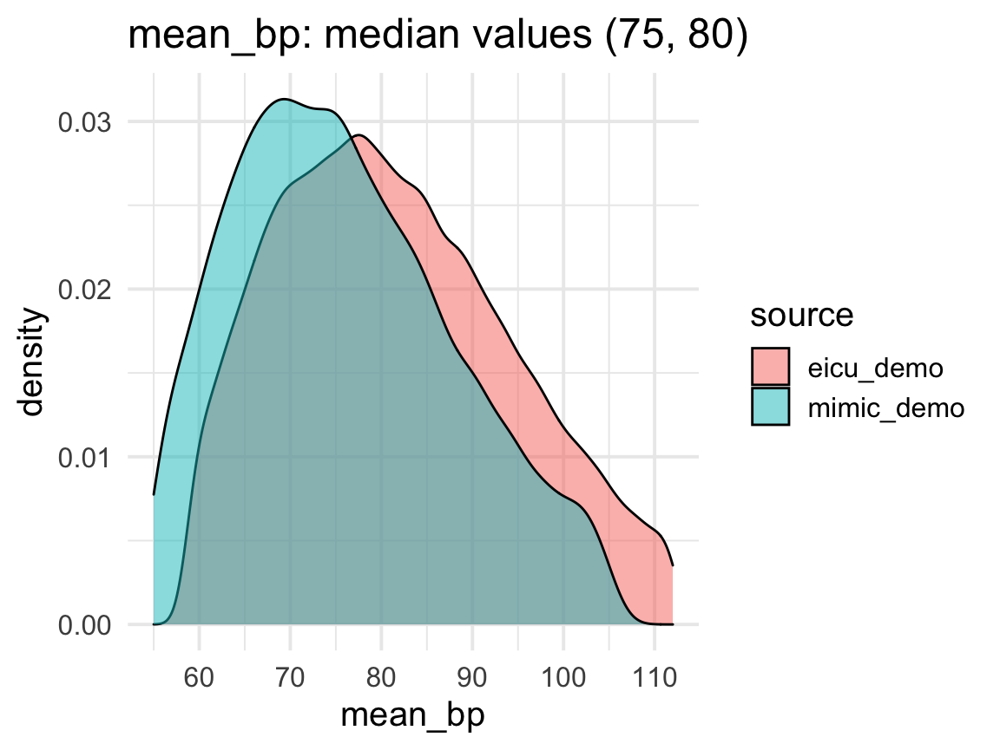
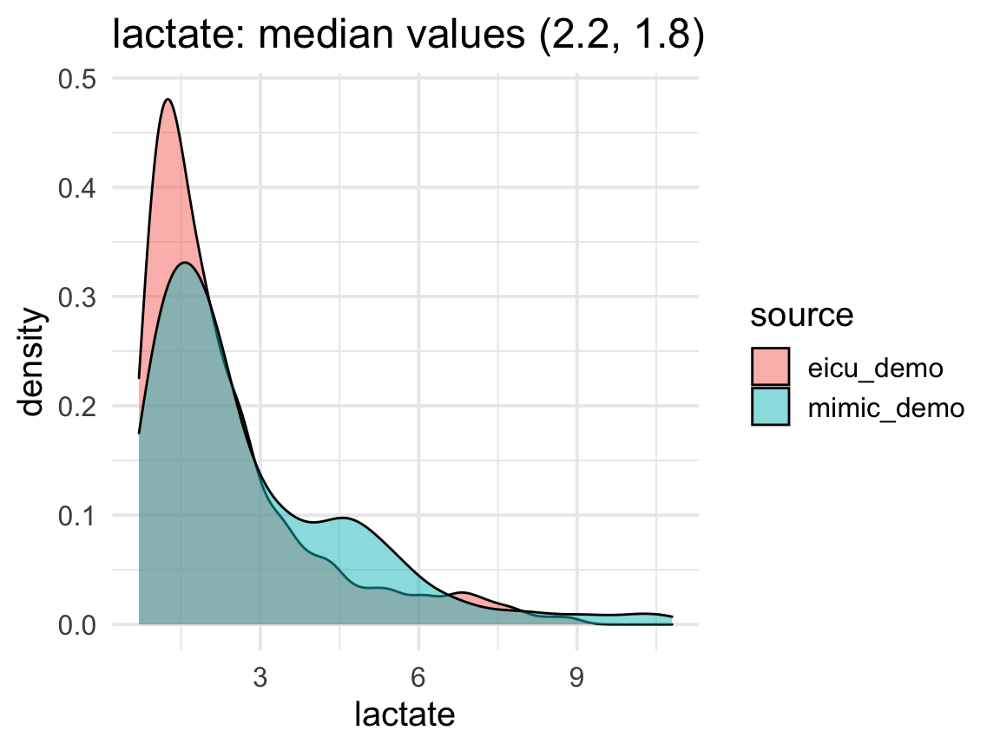
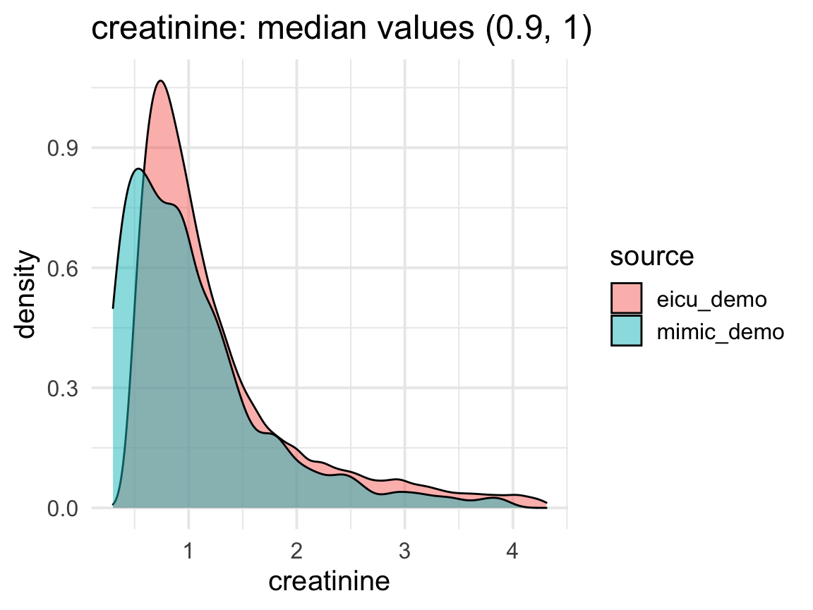
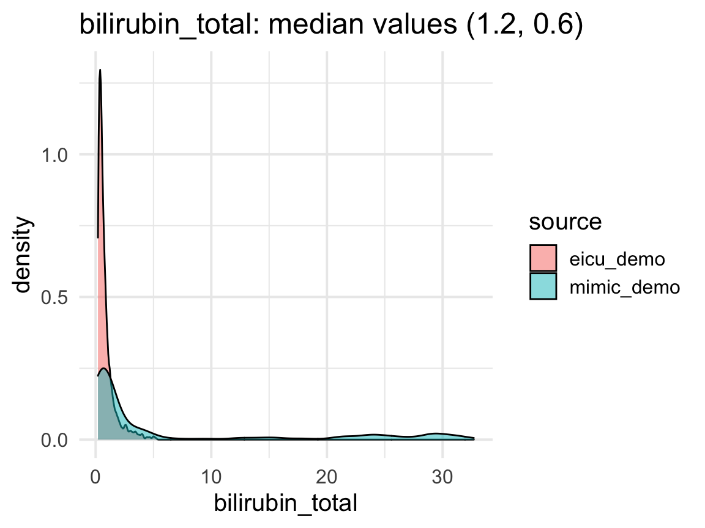

Units of measurement
uom.RmdPossible mismatch in units
Working with different ICU datasets can be challenging in terms of units of measurement. In particular, combining data from different countries can cause a mismatch in the units, as the practices vary substantially. In particular, we note that the commonly used unit of measurement for laboratory values in the US datasets is mg/dL, as opposed to mmol/L used in European datasets. Note that the conversion between the two requires the molecular weight of the substance and therefore must be handled on case-to-case basis. When loading data, care needs to be taken in light of this possible problem.
ricu approach
All concepts that can be loaded with load_dictionary() within ricu have been checked for units, and the units were converted where necessary.
For example, we take 5 different concepts:
concept_range <- c("mean_bp", "lactate" , "creatinine", "bilirubin_total", "platelet_count")
We plot the density of the features and report their median values:

Note that the matching between datasets is not perfect, but the median values should align closely (the above are done using the demo datasets which are rather small in size; in general the matching should be even better).
Concepts outside ricu dictionary
Not all relevant concepts are included in the ricu dictionary. When loading concepts outside the dictionary, we recommend checking whether the units match across datasets using the density plots and median values as shown above. In particular, if there is a clear difference in the median values, or if the density plots look “multimodal”, there is reason to believe some unit conversion is required.